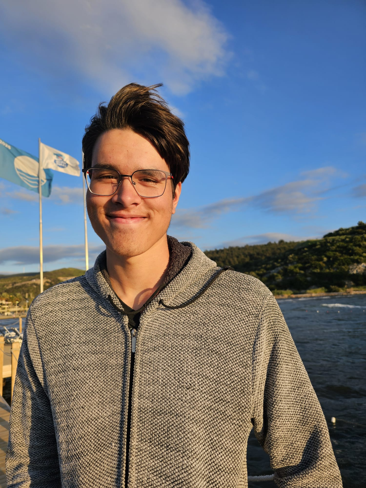

Age:
Located: Netherlands, Gelderland
My Number: +31 6 44162788
My Email: jaronieuwenhuisen@gmail.com
Birth Date: 13-02-2008
December 2023 till January 2026: AH Stack filler (Apeldoorn Linie)
May 2026 till now: Lifeguard/Receptionist Accres Boschbad/Malkander (Apeldoorn)
Water polo event organisations for example: camps, tournaments, pietenzwemmen (dutch thing)"
Maatschappelijke Stage (MaS. English: Social Internship) Water polo trainer
August 26 2025 to now: CMGT (Creative Media & Gaming Technologies) Saxion Enschede
2020-2025: HAVO, Veluws College Walterbosch
ZRZ (Zwemmen Redden Zwembaden) Lifesaving / Rescue swimming
The Ultimate Guide to Game Development with Unity (Official) 46/512
August 2025 worked on Advent Of Code: To Advent Of Code
Engines: Unity
Coding Languages: C# - very basics C++ - OpenGL - PHP - Small bit of HTML, CSS & JS
Eager to learn
Hardworking
Problem solver
Good at active listening
Possitive attitude
Can switch between dominant, compliant and steady roles out of the DISC model
In progress, hopefully around the end of this year
1: Water Polo, 2: Programming, 3: MTG (Magic the Gathering), 4: TTRPG’s (such as DND or Warhammer), 5: Playing Piano/Keyboard, 6: Cooking, 7: Gaming
On request